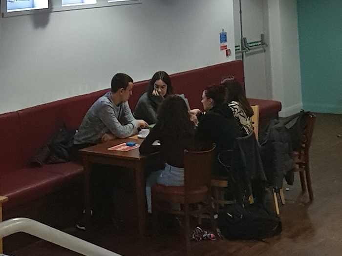
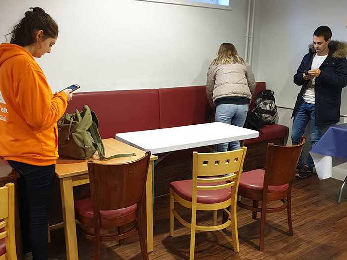

First meeting

The first time I went to Global Lounge most of the people there were Spanish and they are student from exchange. For 2 hours we played differnt games to improve our English, an example game
could be a game where we had two dices with differnt images on each side and we had to create a story based on the images, and the next person had to continues that story. It was really fun game
and we played it for almost the whole meeting. Then we talked a lot about what we do, and who we are.
Second meeting

On the second meeting there were only three people but still we had very interesting time. We talked about our cultures and how they are different from each other e.g. we talked about how weddings look
in Poland and how they look in UK. Honestly I was suprised that there are so many differences in weddings between Poland and UK. Then we discussed our current society that we live in and we talked about
Black Mirror Tv series, which shows how technology and differnt people can affect the world and societies and that it shows how our world can look like in bad scenarios. Then we talked about secret services
in our countries. We talked how they can spy on us and how Edawrd Snowden showed the world how it really looks.